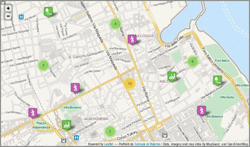

31 gennaio, 2014 | di Andrea Borruso

Quando lo scorso maggio – con Ciro, Gerlando, Marco, Giulio, Davide e Francesco – ho iniziato il lavoro che ha portato alla redazione de ” le linee guida sugli #OpenData della città di Palermo” avevo tantissimo entusiasmo, un po’ di conoscenza di dominio e pochissima esperienza su obiettivi di questo tipo.
Mi sentivo forte di entusiasmo e di conoscenze: in dipendenza del momento, le usavo ora come spade, ora come scudi. Mi dovevo prendere cura di un lavoro ”mio”, che mi sembrava di valore per la società.
Oggi, alla luce dell’esperienza fatta, mi sembra inutile brandeggiare qualsiasi arnese e quel lavoro è della comunità, non mi appartiene più.
Questa bella evoluzione si deve essenzialmente a un’intuizione: avere compreso il valore che una licenza fornisce all’opera a cui viene applicata.
Ai più sembrerà una concetto scontato, e confesso che anche io avrei pensato allo stesso modo prima di aver vissuto questa vicenda. Soprattutto per le licenze che danno maggiore “libertà”:
La persona che ha associato un’opera con questo atto ha dedicato l’opera al pubblico dominio attraverso la rinuncia a tutti i suoi diritti al lavoro in tutto il mondo dalle leggi sul copyright, inclusi tutti i diritti connessi e vicini, nei limiti consentiti dalla legge (licenza CC0).
Associare una licenza di questo tipo ad un proprio elaborato lo rende evidentemente “indipendente”, a disposizione di chiunque lo voglia utilizzare, nelle maniere più inaspettate e geniali.
Ma anche il semplice fatto che ad un oggetto sia associata una licenza chiaramente definita è parte del valore di cui sopra. Proprio quest’ultima cosa, l’ho imparata lavorando su queste linee guida.
Quando abbiamo iniziato a scriverle siamo partiti dai contenuti, e durante tutto il processo di elaborazione non abbiamo mai pensato ai diritti sul documento. Se non nei termini classici: ma sto trasgredendo qualche norma? Se copio questo testo ci denunciano? C’è una multa da pagare?
Ma il bello di una licenza è ciò che ti abilita a fare, non quello che ti vieta: ho apprezzato questo concetto e l’ho fatto mio recentemente. A fine dicembre infatti Francesco Piero Paolicelli mi scrive un’email e mi chiede di inviargli copia in formato modificabile delle linee guida di Palermo, perché sul web c’era soltanto la meno “comoda” e accessibile copia in formato PDF. Allora, visto che il documento era mio, di Ciro, Gerlando, Marco, Giulio, Davide e Francesco, dovevo prima condividere con tutti loro la scelta e all’unanimità. Scrivo loro un’email e nasce uno scambio da cui – non senza sane incomprensioni evolute in soluzioni – ci rendiamo conto che il documento non era veramente libero e che stava perdendo il valore (quello che sia) che aveva.
Per liberarlo, dargli superpoteri e farlo diventare virale è bastato applicargli una licenza. Le “linee guida sugli #OpenData della città di Palermo” sono state pubblicate quindi in CC BY-SA e tutti sono liberi di:
- Condividere - riprodurre, distribuire, comunicare al pubblico, esporre in pubblico, rappresentare, eseguire e recitare questo materiale con qualsiasi mezzo e formato
- Modificare - remixare, trasformare il materiale e basarti su di esso per le tue opere per qualsiasi fine, anche commerciale.
Ai seguenti termini:
- Attribuzione - Si deve attribuire adeguatamente la paternità sul materiale, fornire un link alla licenza e indicare se sono state effettuate modifiche. E’ possibile realizzare questi termini in qualsiasi maniera ragionevolmente possibile, ma non in modo tale da suggerire che il licenziante avalli te o il modo in cui usi il materiale.
- Stessa Licenza - Se si remixa, trasforma il materiale o ci si basi su di esso, bisogna distribuirne i contributi con la stessa licenza del materiale originario.
E’ bastato questo per renderlo un documento utile, abilitante e virale e sono felice che le linee guida sugli Open Data approvate in queste ore dal Comune di Matera siano basate sull’entusiasmo, sulla conoscenza e sull’esperienza che hanno portato alla pubblicazione del documento della città di Palermo, che trovate qui http://bit.ly/opendatacomune.
La licenza applicata non è la migliore, ma alcuni testi utilizzati per la sua stesura sono pubblicati in CC BY-SA e quindi è stato necessario imporre la stessa licenza.
E’ la prima versione del documento, e difatti gli abbiamo assegnato un numero di release e scelto un nome. Per il nome abbiamo deciso di iniziare dalla lettera “a” e di usare una parola che “localizzi” un po’ il documento (è un’idea di Gerlando). E’ la prima release, e quindi dovremo prendercene cura anche in futuro, migliorarla, snellirla, uniformarla nello stile, ristrutturarla e completarla.
Migliorarla ad esempio proprio in termini di licenza e passare da CC BY-SA a CC BY, in modo che sia ancora più riutilizzabile. Oppure renderla neutra rispetto ai Comuni di Italia, e rimuovere i riferimenti a Palermo.
Il documento è aperto ai commenti, così che si possano costruire le versioni successive in modo partecipato, e raccogliere correzioni, note e integrazioni di chicchessia.
E’ stata ed è una bella esperienza e mi sembra utile condividerla. Il documento pubblicato ora in CC BY-SA non vuole essere però una “terra di mezzo” tra l’esigenza di chi deve redarre delle linee guida sugli Open Data e la loro realizzazione, ma la definizione di una frontiera da superare.
NdR: la bella immagine in testa è una delle tante di pubblico dominio della British Library.
Posted in Dati | 2 Comments »
7 maggio, 2013 | di Andrea Borruso
Introduzione
NDR: questo articolo viene pubblicato in contemporanea anche su MobilitaPalermo, un importante blog cittadino non “tecnico”. Per questa ragione nel testo sono stati inseriti dei riferimenti che potranno sembrare scontati per il lettore “tipico” di TANTO.
Il 23 febbraio di quest’anno, in occasione del primo Open Data Day italiano, ho assistito alla presentazione della strategia Open Data del Comune di Palermo.
Sono andato con entusiasmo all’incontro, ma sono tornato a casa pieno di dubbi, perché in quell’occasione ho avuto la sensazione che di strategia ce ne fosse poca, e che il Comune stesse realizzando l’apertura dei dati detenuti con poca consapevolezza.
Non è stato presentato un documento sulle linee guida, né tantomeno è stata annunciata una sua imminente realizzazione. Non è stata data alcuna comunicazione sugli investimenti ed il budget messo a disposizione per il mantenimento e l’ulteriore sviluppo del piano inerente la liberalizzazione dei dati. Sono state accennate, peraltro in modo molto generale, un paio di evoluzioni possibili del progetto, ma senza associarle ad una scadenza temporale, e non definendone le modalità di realizzazione.
Si è ancora in tempo per fare, ad esempio, queste due attività di divulgazione:
- esplicitare ai cittadini l’intero iter che si vuole seguire, definendo con chiarezza: cosa ci si aspetta di ottenere; quali impegni concreti prende l’amministrazione; a quali vincoli le decisioni sono sottoposte (normativi, finanziari, istituzionali, ecc.);
- fornire tutte le informazioni necessarie affinché la partecipazione dei cittadini si possa basare su una conoscenza approfondita dei temi oggetto di discussione e non su semplici sensazioni;
Sono due punti “rubati” da un bell’articolo di Claudio Forghieri. L’articolo parla d’altro, di crowdsourcing applicata alla Pubblica Amministrazione, ma contiene diversi spunti utili per il tema degli OpenData, sia per i decisori che per i cittadini.
Discutere di dati aperti significa parlare di trasparenza dell’attività della P.A., ma anche e soprattutto, in questo momento di crisi, di opportunità per i cittadini, per gli sviluppatori, per le aziende.
Come detto, dalle istituzioni ci si aspetta, quanto meno, che venga tracciata una road map da seguire (si confronti, ad esempio, i principi chiave sugli open data del Comune di Milano con la sezione opendata del Comune di Palermo), ma anche che le stesse istituzioni interagiscano con la società civile (cittadini, aziende, ecc.).
Le due aspettative sono state finora entrambe disattese.
A distanza di due mesi da quella presentazione, non riscontro evidenze che migliorino questo quadro e navigando sul sito saltano subito agli occhi questi elementi:
- dal giorno del lancio non sono stati pubblicati nuovi dataset. Se ne ha evidenza nel box “Ultimi dataset” presente sulla pagina web del Comune dedicata agli Open Data;
- non è stato inserito un motore di ricerca dedicato, né tantomeno i dati sono pubblicati in modo da “essere facilmente identificabili in rete, grazie a cataloghi e archivi facilmente indicizzabili dai motori di ricerca” (vademecum OpenData);
- alcuni dati sono pubblicati in formato proprietario (ad esempio il formato .rar);
- i dataset non sono strutturati in modo tale da essere presentati in maniera sufficientemente granulare, così che possano essere sempre utilizzati dagli utenti per integrarli e aggregarli con altri dati e contenuti in formato digitale (Project Work Open Government Data)
- i dataset hanno un corredo scarso di metadati descrittivi;
- soltanto due dataset sono stati fatti confluire verso dati.gov.it, il Portale nazionale dei dati aperti.
Ho scritto quattro email al Comune di Palermo e non ho mai avuto alcuna risposta. Nel giorno della presentazione era stato chiesto ai presenti di vivere in modo partecipato l’iniziativa, e che i responsabili del Comune sarebbero stati in ascolto e lieti di ricevere contributi dai cittadini. Sulla sezione del sito dedicata si legge: “Se vuoi proporre la pubblicazione di ulteriori dati interessanti e/o per eventuali segnalazioni contattaci“.
L’esperienza professionale e umana mi ha avvicinato molto al mondo degli Open Data. Per tale ragione scriverò a seguire anche alcune cose un po’ più “tecniche” e specifiche, perché l’esperienza è anche un grande supporto alla comunicazione. Partirò proprio dalle email che ho inviato.
Nella prima scrivevo “[...] solo per consigliarvi di non usare il formato .rar per i file compressi, in quanto è un formato proprietario [...].” Come detto, oltre a non ricevere alcuna risposta, i file .rar continuano ad essere presenti nel sito (ad esempio qui).
Nella seconda, in riferimento al dataset “PERIMETRAZIONE CIRCOSCRIZIONI COMUNALI“, scrivevo: “[...] è presente una grave lacuna: manca il file con la definizione del sistema di coordinate.[...]“. Il dataset è ancora sprovvisto di questa informazione fondamentale.
Nella terza segnalavo che il dataset “ELEZIONI AMMINISTRATIVE 2012 - AFFLUENZA ALLE URNE” non fosse scaricabile. Da qualche giorno è possibile farne il download.
Nell’ultima, un po’ più complessa, facevo notare come il dataset “TURISMO - ELENCO DEI SITI TURISTICI VISITABILI” contenesse alcuni errori. Questi sembrano stati corretti, ma l’ho scoperto per caso oggi.
Suggerisco al comune di creare un sistema di feedback, al limite anche automatico, altrimenti qualsiasi sistema di segnalazione non ha quasi alcuna utilità funzionale e sostanziale.
Quest’ultimo dataset è quello più scaricato, quello che sembra più interessante per gli utenti del sito. Incuriosito dal numero di download l’ho scaricato ed ho provato a farci qualcosa, con l’obiettivo di testare concretamente l’efficacia di questa azione e di restituire anche qualcosa indietro.

Il dataset dei siti turistici visitabili della città di Palermo
Palermo è una città con un centro storico molto grande (in alcune classifiche è riportato come il più grande d’Europa). E’ quindi di elevato interesse turistico e ricca di siti visitabili. Pubblicare in Open Data questo dataset è un’ottima scelta, perché si presta potenzialmente ad uno degli scopi principali di questo tipo di azione: il riuso da parte di cittadini, professionisti e aziende. Una persona, infatti, potrebbe scaricare questi dati e farne ad esempio una app per smartphone, utile a chiunque voglia scoprire questa bella città. Realizzarla in più lingue, metterla in vendita in uno store dedicato, guadagnare il giusto e contribuire a rendere Palermo più fruibile.
Il dataset relativo è così descritto sul sito:
La tabella contiene i dati relativi ai siti turistici visitabili in città. Sono distinti il tipo sito, la denomianzione del sito, la descrizione, l’indirizzo, info, orario di accesso al sito, note relative all’orario di accesso al sito, l’eventuale necessità di biglietto di ingresso con i relativi costi ed esenzioni, contatto mail, sito web dedicato, note per eventuali visite guidate ove possibile, informazioni sull’accessibilità.
La descrizione, a parte un piccolo errore di battitura (“denomianzione” per “denominazione”), è chiara e abbastanza autoconsistente. Del dato originale però non sappiamo altro, salvo il suo formato (.csv) e il nome del responsabile (Dott. Eliana Calandra).
Sono presenti in realtà altre informazioni – come ad esempio la “Data di creazione” – ma non riguardano il dato originale, e lo descrivono soltanto in relazione alla sua pubblicazione nella sezione Open Data del sito del Comune.
L’assenza di informazioni fondamentali sul dataset e propedeutiche affinché il dato possa essere realmente usato e abbia un valore concreto, ne sminuisce fortemente il valore e la sua usabilità, vanificando, di fatto, lo scopo per il quale è stato pubblicato.
Ad esempio, uno di questi è l’indicazione della data di aggiornamento: quando è stato redatto questo archivio?
Un dataset turistico deve essere recente ed aggiornato per avere valore, infatti cambiano con una certa frequenza elementi informativi come: costi di eventuali biglietti ingresso, orari di apertura, numeri di telefono, ecc..
Altra informazione omessa nella pubblicazione del dataset è quella relativa alla scelta progettuale che c’è alle spalle dell’archivio. Contiene 100 siti. Viene da domandarsi: sono tutti quelli visitabili in questa città? Se non lo sono, che filtro è stato applicato? Sono 100 perché si è filtrato soltanto in base a “chiese e oratori” (59), “musei e gallerie d’arte” (26) e “ville e giardini” (15)? Perché ci sono siti di Bagheria e non di altri comuni?
Il dataset analizzato si presta alla rappresentazione cartografica, ma non contiene le coordinate dei vari siti contenuti. Tuttavia è presente l’indirizzo ed è su questo che ho eseguito un’operazione di geocoding.
Prima di farlo però, l’ho analizzato un po’ più nei dettagli. A seguire alcuni degli elementi riscontrati:
- l’anno di costruzione dei siti è inserito nel campo “Nome del sito”. In questo modo è un’informazione poco utilizzabile. Sarebbe preferibile inserirla in un campo dedicato (l’ho fatto). Che questo numero presente nel campo sia l’anno di costruzione è una mia deduzione, ma non posso esserne certo.
- ci sono due righe per la “Chiesa di S. Maria in Valverde (1633)”. L’unica differenza sembra l’indirizzo, ma tutti gli altri dati sembrano coincidenti.
- ci sono 8 strutture in cui non è inserito il numero di telefono. Per un dataset di questo tipo è una grave lacuna; basti pensare che mancano quelli dell’Orto Botanico e della Cappella Palatina.
- il campo “info” contiene essenzialmente i numeri di telefono, ma mescolati alle volte con elementi altrettanto utili come “Sito è visitabile solo in occasione di mostre e/o eventi” o “Chiusa per restauro”. Penso che sarebbe preferibile creare un campo “telefono”, distinto da un generico “info”.
- il campo “indirizzo email”, importantissimo a fini turistici, non è mai valorizzato. In realtà lo è una sola volta, nel caso della “Chiesa di S. Cristina La Vetere (1174)”, ma è stato scambiato con il valore contenuto nel campo “sito web” (l’ho modificato).
- gli URL dei siti web sono inseriti di solito con questa struttura ” www.nomesito.it“. Alcuni record però sono difformi (“http://www.nomesito.it” o ad esempio “web: www.nomesito.it”). Li ho uniformati alla struttura www.nomesito.it
- nel campo “descrizione del sito” è possibile leggere sia “chiesa” che “Chiesa”, “Cappella” e “cappella”; ho uniformato i nomi di categoria in minuscolo.
- solo la “Cattedrale” ha informazioni sull’accessibilità. Mi sembra un’informazione propedeutica per qualsiasi dataset di informazioni su siti turistici.
- sono presenti numerosi spazi doppi, ed alcuni caratteri di tabulazione, che non hanno ragione di essere presenti, e che disturbano la gran parte delle eleborazioni automatiche via software.
- il nome via corretto per “Corso Vittorio Emanuele” dovrebbe essere “Via Vittorio Emanuele”.
Fatta questa rapida analisi del dato, sono passato a fare il geocoding sfruttando le API dedicate di Google. Queste consentono con una chiamata in HTTP, partendo da un indirizzo postale, di avere restituito (tra le altre cose) latitudine e longitudine dell’indirizzo. Per conoscere, ad esempio, quelle di “Via Terrasanta 82, Palermo” lancerò questo URL:
http://maps.googleapis.com/maps/api/geocode/xml?
address=Via%20Terrasanta%2082,%20Palermo&sensor=false
L’output in questo caso è in XML e tra le informazioni che mi vengono restituite ci sono proprio quelle che cerco, latitudine e longitudine:
<location>
<lat>38.1303072</lat>
<lng>13.3445130</lng>
</location>
Ma si tratta soltanto di uno strumento e come tale ha anche lui i suoi problemi. Due esempi tra tanti:
- non sono presenti nel database di Google tutti i numeri civici, come ad esempio “Piazza Casa Professa, 21″ o “Piazza S. Valverde, 3″. Il problema è risolvibile integrando gli strumenti di Google a quelli di Bing Maps, Pagine Gialle, OpenStreetMap, e lo sarà ancora di più quando il comune pubblicherà in Open Data il dataset del viario e dei numeri civici.
- in Google Maps si legge “Via Nasi Nunzio, 18, Palermo” e non “Via Nunzio Nasi, 18, Palermo”, e si inverte il classico ordine “Nome Cognome”
Il problema principale legato alla geocodifica è che però la metà dei siti sono associati ad indirizzi senza numero civico, e quindi non è possibile ricavarne la posizione automaticamente. Questa è una lacuna che non è del dato in quanto tale, ma un vero e proprio “vuoto toponomastico”: non esiste un numero civico per ogni ingresso ad un edificio di una città.
Il lavoro che ho fatto è quindi incompleto, perché per questa demo mi sono fermato a ciò che era possibile automatizzare.
L’analisi e la pulizia dei dati, così come il geocoding sugli indirizzi, li ho fatti con un bellissimo software open-source multipiattaforma, che nasce proprio per ripulire i dati e derivare nuove informazioni:OpenRefine (spero di scriverci un tutorial quanto prima).
Ricavate le coordinate dei siti, ho pensato subito di pubblicare i dati online, realizzando una piccola applicazione di webmapping a solo scopo dimostrativo, che mostrasse quanto fosse semplice realizzare un prodotto gradevole, utile, moderno, i cui costi fossero soltanto legati al tempo di sviluppo.
Ho utilizzato infatti soltanto software open-source. L’ho fatto per ragioni di personale comodità, in quanto sono quelli che utilizzo maggiormente, ma anche per la grande qualità e per le funzioni disponibili.
Da OpenRefine ho estratto un file .csv, che ho convertito in GeoJSON con l’utility ogr2ogr messa a disposizione dalla libreria GDAL. Il GeoJSON è un formato ormai “classico” nel mondo del web-mapping e nativamente supportato da Leaflet, la meravigliosa libreria usata per fare questa piccola applicazione di cartografia online.
E’ molto bella perché ben documentata, di semplice utilizzo, ricca di feature e (come dicevo anche prima) moderna. Due prove evidenti sono la leggibilità della mappa prodotta su dispositivi mobili, e la possibilità (tramite plugin) di aggregare in cluster indicatori di posizione molto vicini. Nella mappa infatti tutte le volte che ad un certo livello di zoom gli indicatori sono troppo vicini, e quindi poco leggibili, vengono raggruppati in un simbolo circolare, con sovrimpresso un numero che indica da quanti elementi è formato; al click sul simbolo, si avvierà automaticamente lo zoom sulla mappa, e verranno mostrati tutti gli elementi che compongono il gruppo.
Prima di scegliere questo dataset e questo output, ho navigato un po’ nella sezione OpenData del sito del Comune, ho trovato limitante l’assenza sul sito di un motore di ricerca dedicato che mi consentisse, ad esempio, di filtrare soltanto i dati pubblicati in formato .shp (un classico formato cartografico). Ne ho costruito uno con Google Custom Search Engine (che il Comune usa per l’intero sito), con il quale posso risalire rapidamente ai soli dataset pubblicati in questo formato (basta inserire “shape” come parola chiave) o ai cinque in .csv (usate “csv” in questo caso).
Infine ho pubblicato tutto in un minisito dedicato, realizzato con Twitter Bootstrap, dove troverete:
In conclusione
Mi rendo perfettamente conto che è facile fare critiche.
Ed è per questo che ho voluto concretamente indicare cosa ci si aspetta dalle Istituzioni quando queste dicono di “fare Open Data”. Per la stessa ragione ho voluto mettere in piedi un esempio di applicazione costruita a partire dai dati pubblicati dal Comune, una piccola cosa concreta.
L’operazione di trasparenza, innanzitutto, prende le sue mosse da una progettualità, che anch’essa deve essere correttamente descritta ed esplicitata: quali sono le finalità, quali sono le linee guida, quali sono le modalità operative, qual è il budget a disposizione, quali sono le evoluzioni e gli incrementi previsti, quali sono le modalità comunicative.
In secondo luogo, è necessario avere cura di rendere disponibili dati di qualità.
Il valore del dato aperto risiede nell’accuratezza dello stesso e nella sua ri-usabilità.
Non è solo un problema di trasparenza della P.A..
Non è solo una questione etica per cui è giusto che il lavoro della P.A. e le informazioni dalla stessa raccolte e detenute vengano poi restituite ai cittadini ed agli utenti che sono i contribuenti.
Non si tratta soltanto di correttezza metodologica e/o scientifica per cui ci si aspetta che l’elaborazione del dato avvenga secondo determinati criteri e standard elevati.
Dati di qualità, e solo questi, consentono di assolvere alla funzione per cui essi sono raccolti e pubblicati: è un problema economico, nel senso di utilizzo delle risorse per soddisfare al meglio bisogni individuali e collettivi.
Un dato aggiornato ed accurato consente il suo utilizzo nei modi più svariati.
David Miller, Sindaco di Toronto, ebbe a dire: “una volta liberati i dati, non c’è limite a quello che le persone possono farci“.
Per questo ritengo che pubblicare un tweet come questo ” Trasparenza e innovazione. Palermo VII in Italia.”
oltre che non corretto (perché si riferisce solo alla quantità di dati) non ha senso. Quantità senza qualità non serve a nulla.
Nello stesso tweet leggo con piacere di una App ufficiale. Peccato non averla agganciata ad una gara tra sviluppatori/progettisti, per la migliore applicazione costruita a partire da dati pubblicati (anche) in Open Data.
Qualche giorno addietro ho condiviso su twitter un articolo: Open Data in Agriculture and Why It Matters. Una frase di questo articolo, che parla del valore degli Open Data nell’agricoltura, mi ha colpito: “ottimizzare il processo decisionale“.
Se l’Amministrazione apre e diffonde la propria conoscenza (i dati dalla stessa detenuti) otterrà un sicuro ritorno in termini di produttività e di partecipazione della cittadinanza, in termini di ricerca e di innovazione. Tutti elementi, questi che sospingono, specialmente in questi momenti di crisi, la crescita economica e sociale di una collettività.
Gli open data sono una opportunità per il Paese. Si tratta di crederci (la P.A. ci deve credere). Leggere in un recentissimo comunicato stampa che “Il nuovo Statuto del Comune si ispirerà ai principi della trasparenza e della partecipazione e su riconoscimento, tutela e valorizzazione dei beni comuni“, mi deve fare pensare che questa amministrazione ci vuole credere. Ma questo lo diranno i fatti.
Così come devo supporre e voglio sperare che i dataset a disposizione del Comune non abbiano le stesse caratteristiche di quello descritto in questo post. Viceversa gli amministratori di questa città non avrebbero gli strumenti adeguati per gestirla bene.
Alla presentazione della strategia Open Data del Comune di Palermo è stato chiesto alla cittadinanza di contribuire all’apertura dei dati. Giusto!
A due mesi della detta presentazione vorrei, provocatoriamente, parafrasare (ribaltandola) la famosa frase di J.F.Kennedy: “non chiedetevi cosa possono fare i cittadini per l’apertura dei dati, chiedetevi cosa deve fare l’Amministrazione per produrre dati di qualità.“
Posted in Dati | 12 Comments »
19 marzo, 2013 | di Andrea Borruso
 Il 23 febbraio sono stato a Roma alla prima conferenza organizzata dall’associazione OpenGeoData Italia. Ne sono stato – per conto di TANTO - uno dei relatori e sono contento di aver partecipato. Le ragioni sono diverse e ne voglio elencare solo alcune:
Il 23 febbraio sono stato a Roma alla prima conferenza organizzata dall’associazione OpenGeoData Italia. Ne sono stato – per conto di TANTO - uno dei relatori e sono contento di aver partecipato. Le ragioni sono diverse e ne voglio elencare solo alcune:
- ho avuto la possibilità di avere un quadro di quello che avviene sul tema in Italia;
- ho incontrato persone che troppo spesso incrocio soltanto virtualmente (napo, Massimo Zotti, GimmiGIS, Antonio Rotundo, Giovanni Biallo, …) ;
- ho stretto la mano a Ernesto Belisario, Martin Koppenhoefer e Gianluca Vannuccini;
- ho preso una pausa contro il “logorio della vita moderna”, fatta anche di chiacchiere e birra con il presidente.
Cosa voglio di più? In realtà avrei proprio voluto incontrare un lucano, ma questa è un’altra storia ed è un po’ “up, close and personal”.
La nostra relazione aveva come obiettivo quello di proporre (ed in un certo senso anche quello di verificarne l’esigenza) un’azione per la crescita della consapevolezza del valore degli OpenGeoData, che contribuisca a fare in modo che non rimangano soltanto un obbligo di legge, una moda e uno sfogo per (geo)geek. Non conoscevo i contenuti delle presentazioni degli altri relatori, ma ascoltandoli ho compreso chiaramente che si trattava di un’esigenza condivisa da molti e sono tornato a Palermo “forte” di diversi riscontri.
Ieri pomeriggio però mi ha preso un po’ lo sconforto. Volevo raccogliere degli elementi, per costruire un elenco commentato di casi tipo di “pregio”, da usare come strumento divulgativo classico. Ho consultato alcuni siti web di importanti comuni del Nord e del Sud Italia, concentrandomi sulla sezione geografica dei dataset disponibili e due elementi mi sono saltati agli occhi.
Il primo è un errore, anzi come diceva la mia professoressa di Matematica “un orrore”, ma per fortuna molto poco diffuso: layer cartografici in formato .shp non accompagnati da file .prj. Non può bastare – come avviene – scrivere nella pagina di descrizione dello specifico dataset “Sistema di riferimento UTM ED50”. Fatto il download del dato (che contiene i soli .shp, .shx e .dbf) il virus ha iniziato già a diffondersi: io infatti magari passerò il file .zip ad un mio collega senza precisargli il sistema di coordinate letto nella pagina, ed in due passaggi ho compromesso in modo grave la qualità del dato.
Il secondo purtroppo è qualcosa di molto diffuso e ha radici che non riguardano gli OpenGeoData, ma che in questo contesto fanno tanto “male”. Ho aperto diversi dataset spaziali scaricabili in formato .shp, ne ho fatto il download e ho visualizzato in un client le tabelle associate. Mi sono trovato davanti nomi di campo di questo tipo: “AFFIDARE_A”, “TIPO_MANU1”, “ARRE_GESTI” e anche il meraviglioso “GIANCARLO”. Il formato .dbf – con tutti i suoi limiti – ci mette il suo, ma pubblicare un dato, senza accompagnarlo con un file che ne descriva nel dettaglio il contenuto informativo, mi pare un “non senso” e mi fa pensare ad un paio di indimenticabili caffè bevuti in case in cui i barattoli di sale e zucchero non avevano etichette.
Il primo elemento è per fortuna poco diffuso e di soluzione banale, perché esistendo già uno standard per descrivere il sistema di coordinate di un file .shp, si possono implementare delle semplici procedure di controllo.
Il secondo è molto più complicato perché da anni tutti noi produciamo file .shp, ma senza porci il problema di descriverne il contenuto informativo e stavolta in un solo passaggio impoveriamo il valore del nostro dataset.
Andare verso le 5 stelle dei Linked Open Data e verso INSPIRE in qualche modo risolverebbe problemi di questo tipo, ma ad oggi la gran parte degli OpenGeoData vengono pubblicati principalmente in modalità più “semplici” e penso sia necessario trovare una “cura” prima possibile.
Che ne pensate?
Il tema è vasto e l’intento di queste
post è soltanto costruttivo e vale soltanto come apripista dell’iniziativa che vogliamo lanciare in modo corale.
Oggi fra l’altro è un giorno speciale, perché scatta l’open by default: ”dati e documenti pubblicati online dalle amministrazioni titolari – senza una esplicita licenza d’uso che ne definisca le possibilità e i limiti di riutilizzo – sono da intendersi come dati aperti, quindi dati che possono essere liberamente acquisiti da chiunque e riutilizzabili anche per fini commerciali.”
Foto di jlib
Posted in Dati | 26 Comments »